전기공사기사 (2011-06-12 기출문제)
1과목: 전기응용 및 공사재료
1. 전기철도용 변전소의 간격을 결정하는 요소에 속하지 않는 것은?
- 전압변동률
- 선로의 구배
- 수송량
- 노면의 상태
(정답률: 68%)

2. 다음 중 농형 유도 전동기의 기동법으로 적합하지 않은 것은?
- 전전압 기동
- 기동 보상기
- Y - △ 기동
- 2차 저항 기동
(정답률: 87%)
3. 전지의 국부작용을 방지하는 방법은?
- 완전 밀폐
- 감극제 사용
- 니켈 도금
- 수은 도금
(정답률: 69%)
4. 정출력부하 운전에 가장 적합한 전동기는?
- 직류 직권 전동기
- 직류 분권 전동기
- 권선형 유도 전동기
- 동기 전동기
(정답률: 74%)
5. 2종의 금속이나 반도체를 접합하여 열전대를 만들고 기전력을 공급하면 각 접점에서 열의 흡수, 발생이 일어나는 현상은?
- 지벡(Seebeck) 효과
- 펠티어(Peltier) 효과
- 톰슨(Thomson) 효과
- 핀치(Pinch) 효과
(정답률: 84%)
6. LASCR은 무엇에 의해 점호되는가?
- 열
- 압력
- 온도
- 빛
(정답률: 83%)
7. 직류 전동기 중 공급전원의 극성이 바뀌면 회전방향이 바뀌는 것은?
- 분권기
- 평복권기
- 직권기
- 타여자기
(정답률: 76%)
8. 저항 20[Ω]의 전열기를 100[V]의 전원에 접속하였을 때 매초 발생하는 열량[cal]은?
- 110
- 120
- 130
- 135
(정답률: 76%)
9. 전기회로에서 전류에 해당하는 열회로의 열류의 단위는?
- kcal
- h·m·℃/kcal
- ℃ ·h/kcal
- kcal/h
(정답률: 69%)
10. 형태가 복잡한 금속제품을 급속으로 온도를 균일하게 가열하는데 가장 적합한 방법은?
- 적외선 가열
- 염욕로
- 유도가열
- 저주파 유도로
(정답률: 76%)
11. 저압 배전반의 주 차단기로 주로 사용되는 차단기는?
- VCB 또는 TCB
- COS 또는 PF
- ACB 또는 MCCB
- DS 또는 OS
(정답률: 84%)
12. 소켓의 수용구 크기 중에서 사인 전구에 사용되는 수용구 크기는?
- E17
- E26
- E39
- E10
(정답률: 64%)
13. 알칼리 축전지의 공칭용량은?
- 2[Ah]
- 4[Ah]
- 5[Ah]
- 10[Ah]
(정답률: 81%)
14. 후강전선관은 바깥지름 21mm 이상, 안지름 16.4mm 이상이다. 두께는 몇[mm] 이상인가?
- 1.2
- 1.9
- 2.0
- 2.3
(정답률: 51%)
15. 저압회로의 과전류차단기 보호방식 중 캐스케이드 보호방식은 최대 단락전류가 몇 [kA]를 초과해야 하는가?
- 5
- 10
- 15
- 20
(정답률: 68%)
16. 피뢰기 자체의 공장이 계통사고에 파급되는 것을 방지하기 위한 장치는?
- 디스콘넥터(Disconnector)
- 압소바(Absorber)
- 콘넥터(Connector)
- 어레스터(Arrester)
(정답률: 84%)
17. 높은 온도 및 기름에 가장 잘 견디며 절연성, 내온성, 내유성이 풍부하며 연피케이블에 사용하는 전기용 테이프는?
- 면테이프
- 비닐테이프
- 리노테이프
- 고무테이프
(정답률: 88%)
18. 가공전선로의 지지물에 지선을 사용하는 경우, 지선으로 사용되는 연선은?
- 강심 알루미늄연선
- 아연도강연선
- 알루미늄연선
- 경동연선
(정답률: 70%)
19. 전동기 절연물의 허용온도는 일반적으로 저압 전동기는 E종, 고압전동기는 B종을 채택하는데 B종 절연의 허용 최고 온도[℃]는?
- 90℃
- 130℃
- 120℃
- 155℃
(정답률: 81%)
20. 애자의 형상에 의한 분류가 아닌 것은?
- 자기애자
- 핀애자
- 지지애자
- 내무애자
(정답률: 65%)
2과목: 전력공학
21. 애자가 갖추어야 할 구비조건으로 옳은 것은?
- 온도의 급변에 잘 견디고 습기도 잘 흡수하여야 한다.
- 지지물에 전선을 지지할 수 있는 충분한 기계적 강도를 갖추어야 한다.
- 비, 눈, 안개 등에 대해서도 충분한 절연저항을 가지며, 누설전류가 많아야 한다.
- 선로전압에는 충분한 절연내력을 가지며, 이상전압에는 절연내력이 매우 작아야 한다.
(정답률: 21%)
22. 수변전설비에서 1차측에 설치하는 차단기의 용량은 어느 것에 의하여 정하는가?
- 변압기 용량
- 수전계약용량
- 공급측 단락용량
- 부하설비용량
(정답률: 23%)
23. 송전선로의 코로나 임계전압이 높아지는 경우는?
- 기압이 낮아지는 경우
- 전선의 지름이 큰 경우
- 온도가 높아지는 경우
- 상대공기밀도가 작은 경우가.
(정답률: 17%)
24. 다음 중 전동기 등 기계 기구류 내의 전로의 절연 불량으로 인한 감전 사고를 방지하기 위한 방법으로 거리가 먼 것은?
- 외함 접지
- 저전압 사용
- 퓨즈 설치
- 누전차단기 설치
(정답률: 17%)
25. 다음 중 고압 배전계통의 구성 순서로 알맞은 것은?
- 배전변전소 ⟹ 간선 ⟹ 분기선 ⟹ 급전선
- 배전변전소 ⟹ 급전선 ⟹ 간선 ⟹ 분기선
- 배전변전소 ⟹ 간선 ⟹ 급전선 ⟹ 분기선
- 배전변전소 ⟹ 급전선 ⟹ 분기선 ⟹ 간선
(정답률: 20%)
26. 송전선로의 건설비와 전압과의 관계를 나타내는 것은?
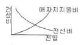
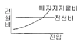
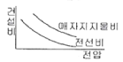
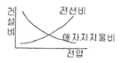
(정답률: 22%)
27. 수전단을 단락한 경우 송전단에서 본 임피던스가 300Ω이고, 수전단을 개방한 경우 송전단에서 본 어드미턴스가 1.875×10-3℧일 때 송전선의 특성임피던스는 약 몇 [Ω]인가?
- 200
- 300
- 400
- 500
(정답률: 17%)
28. 전선 지지점의 고저차가 없을 경우 경간 300[m]에서 이도 9[m]인 송전 선로가 있다. 지금 이 이도를 11[m]로 증가시키고자 할 경우 경간에 더 늘려야할 전선의 길이는 약 몇 [㎝]인가?
- 25
- 30
- 35
- 40
(정답률: 16%)
29. 다음 중 수차의 특유 속도를 나타내는 식은? (단, N:정격회전수[rpm], H:유효낙차[m], P:유효낙차 H[m]에서의 최대 출력[kW]이다.)
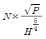
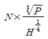
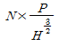
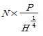
(정답률: 19%)
30. 한류리액터의 사용 목적은?
- 누설전류의 제한
- 단락전류의 제한
- 접지전류의 제한
- 이상전압 발생의 방지
(정답률: 24%)
31. 다음 중 영상 변류기를 사용하는 계전기는?
- 과전류계전기
- 저전압계전기
- 지락과전류계전기
- 과전압계전기
(정답률: 23%)
32. 다음 중 켈빈(Kelvin)의 법칙이 적용되는 경우는?
- 전력 손실량을 축소 시키고자 하는 경우
- 전압 강하를 감소 시키고자 하는 경우
- 부하 배분의 균형을 얻고자 하는 경우
- 경제적인 전선의 굵기를 선정하고자 하는 경우
(정답률: 23%)
33. 수력발전소에서 사용되는 수차 중 15m 이하의 저낙차에 적합하여 조력발전용으로 알맞은 수차는?
- 카플란수차
- 펠톤수차
- 프란시스수차
- 튜블러수차
(정답률: 16%)
34. 3상 전원에 접속된 △결선의 콘덴서를 Y결선으로 바꾸면 진상 용량은 어떻게 되는가?
- √3배로 된다.
- 1/3로 된다.
- 3배로 된다.
- 1/√3로 된다.
(정답률: 15%)
35. 송전선 보호범위 내의 사고에 대하여 고장점의 위치에 관계없이 선로 양단을 쉽고 확실하게 동시에 고속으로 차단하기 위한 계전방식은?
- 회로선택 계전방식
- 과전류 계전방식
- 방향거리(directive distance) 계전방식
- 표시선(pilot wire) 계전방식
(정답률: 12%)
36. 30000kW의 전력을 50km 떨어진 지점에 송전하는데 필요한 전압은 약 몇 [kV] 정도인가? (단, Still의 식에 의하여 산정한다.)
- 22
- 33
- 66
- 100
(정답률: 17%)
37. 가공송전선로에서 선간거리를 도체 반지름으로 나눈 값(D/r)이 클수록 인덕턴스와 정전용량은 어떻게 되는가?
- 인덕턴스와 정전용량이 모두 작아진다.
- 인덕턴스와 정전용량이 모두 커진다.
- 인덕턴스는 커지나, 정전용량은 작아진다.
- 인덕턴스는 작아지나, 정전용량은 커진다.
(정답률: 23%)
38. 탑각의 접지와 관련이다. 접지봉으로써 희망하는 접지저항치까지 줄일 수 없을 때 사용하는 것은?
- 가공지선
- 매설지선
- 크로스본드선
- 차폐선
(정답률: 22%)
39. 직접접지방식에서 변압기에 단절연이 가능한 이유는?
- 고장전류가 크므로
- 지락전류가 저역률이므로
- 중성점 전위가 낮으므로
- 보호계전기의 동작이 확실하므로
(정답률: 15%)
40. 불평형 부하에서 역률은?
- 유효전력/각 상의 피상전력의 산술합
- 무효전력/각 상의 피상전력의 산술합
- 무효전력/각 상의 피상전력의 벡터합
- 유효전력/각 상의 피상전력의 벡터합
(정답률: 23%)
3과목: 전기기기
41. 인가전압과 여자가 일정한 동기전동기에서 전기자 저항과 동기 리액턴스가 같으면 최대출력을 내는 부하각은 몇 도[°]인가?
- 30°
- 45°
- 60°
- 90°
(정답률: 12%)
42. 4극 3상 유도전동기가 있다. 총 슬롯수는 48이고 매극 매상 슬롯에 분포하고 코일 간격은 극간격의 75[%]의 단절권으로 하면 권선 계수는 얼마인가?
- 약 0.986
- 약 0.927
- 약 0.895
- 약 0.887
(정답률: 12%)
43. 정격 6600[V]인 3상 동기 발전기가 정격출력(역률=1)으로 운전할 때 전압 변동률이 12[%]였다. 여자와 회전수를 조정하지 않은 상태로 무부하 운전하는 경우 단자전압[V]은?
- 7842
- 7392
- 6943
- 6433
(정답률: 18%)
44. 전부하시에 전류가 0.88[A], 역률 89[%], 속도 7000[rpm], 60[Hz], 115[V]인 2극 단상 직권 전동기가 있다. 회전자와 직권계자 권선의 실효저항의 합은 58[Ω]이다. 이 전동기의 기계손을 10[W]라고 하면 전부하시에 부하에 전달되는 토크는 약 얼마인가? (단, 여기서 계자의 자속은 정현파 변화를 한다고 하고 브러시는 중성축에 놓여 있다.)
- 49[g·m]
- 4.9[g·m]
- 48[N·m]
- 4.8[N·m]
(정답률: 12%)
45. 유도 전동기의 여자전류는 극수가 많아지면 정격전류에 대한 비율이 어떻게 되는가?
- 적어진다.
- 원칙적으로 변화하지 않는다.
- 거의 변화하지 않는다.
- 커진다.
(정답률: 13%)
46. 직류 분권전동기가 있다. 그 출력이 9[kW]일 때, 단자전압은 220[V], 입력전류는 51.5[A], 계자전류는 1.5[A], 회전속도는 1500[rpm]이였다. 이때의 발생토크[kg · m]와 효율[%]은? (단, 전기자 저항은 0.1[Ω]이다.)
- 5.85[kg · m], 94.8[%]
- 6.98[kg · m], 79.4[%]
- 36.74[kg · m], 79.4[%]
- 57.33[kg · m], 94.8[%]
(정답률: 15%)
47. 다음 전력용 반도체 중에서 가장 높은 전압용으로 개발되어 사용되고 있는 반도체 소자는?
- LASCR
- IGBT
- GTO
- BJT
(정답률: 16%)
48. 3상 직권 정류자 전동기에 중간(직력)변압기가 쓰이고 있는 이유가 아닌 것은?
- 정류자 전압의 조정
- 회전자 상수의 감소
- 경부하 때 속도의 이상 상승 방지
- 실효 권수비 선정 조정
(정답률: 17%)
49. 보통 농형에 비하여 2중 농형 전동기의 특징인 것은?
- 최대 토크가 크다.
- 손실이 적다.
- 기동 토크가 크다.
- 슬립이 크다.
(정답률: 20%)
50. 동기기에서 동기 리액턴스가 커지면 동작 특성이 어떻게 되는가?
- 전압 변동률이 커지고 병렬운전시 동기화력이 커진다.
- 전압 변동률이 커지고 병렬운전시 동기화력이 작아진다.
- 전압 변동률이 적어지고 지속단락 전류는 감소한다.
- 전압 변동률이 적어지고 지속단락 전류는 증거한다.
(정답률: 18%)
51. 1차 전압 100[V], 2차 전압 200[V], 선로 출력 50[kVA]인 단권변압기의 자기 용량은 몇 [kVA]인가?
- 25
- 50
- 250
- 500
(정답률: 15%)
52. 5[kVA]의 단상 변압기 3대를 △결선하여 급전하고 있는 경우 1대가 소손되어 나머지 2대로 급전하게 되었다. 2대의 변압기로 과부하를 10[%]까지 견딜 수 있다고 하면 2대가 분담할 수 있는 최대 부하는 약 몇 [kVA]인가?
- 5
- 8.6
- 9.5
- 15
(정답률: 17%)
53. 병렬 운전 중의 A, B 두 동기발전기 중에서 A발전기의 여자를 B기보다 강하게 하면 A발전기는?
- 90° 앞선 전류가 흐른다.
- 90° 뒤진 전류가 흐른다.
- 동기화 전류가 흐른다.
- 부하 전류가 증가한다.
(정답률: 17%)
54. 변압기에서 철손을 알 수 있는 시험은?
- 유도시험
- 단락시험
- 부하시험
- 무부하시험
(정답률: 21%)
55. 유도전동기의 제동법 중 유도전동기를 전원에 접속한 상태에서 동기속도 이상의 속도로 운전하여 유도 발전기로 동작시킴으로써 그 발생 전력을 전원으로 반환하면서 제동하는 방법은?
- 발전제동
- 회생제동
- 역상제동
- 단상제동
(정답률: 19%)
56. 다음 중 DC서보모터의 기계적 시정수를 나타낸 것은? (단, R은 권선의 저항, J는 관성모멘트, Ke는 서보 유지전압 정수, Kf는 서보모터의 도체 정수이다.)
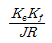
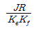
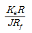
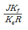
(정답률: 18%)
57. 단권변압기에서 W2 권선에 흐르는 전류의 크기[A]는?
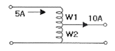
- 5
- 10
- 15
- 20
(정답률: 18%)
58. 변압기의 기름 중 아크 방전에 의하여 가장 많이 발생하는 가스는?
- 수소
- 일산화탄소
- 아세틸렌
- 산소
(정답률: 19%)
59. 4극, 중권, 총도체수 500, 1극 자속수가 0.01[Wb]인 직류 발전기가 100[V]의 기전력을 발생시키는데 필요한 회전수는 몇 [rpm] 인가?
- 1000
- 1200
- 1600
- 2000
(정답률: 19%)
60. 자여식 인버터의 출력 전압의 제어법에 주로 사용되는 방식은?
- 펄스폭 방식
- 펄스 주파수 변조 방식
- 펄스폭 변조 방식
- 혼합 변조 방식
(정답률: 15%)
4과목: 회로이론 및 제어공학
61. 직류를 공급하는 R-C직렬회로에서 회로의 시정수 값은?
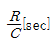
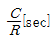
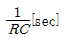
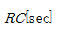
(정답률: 15%)
62. 다음 그림은 전압이 10[V]인 전원장치에 가변저항과 전열기를 연결한 회로이다. 가변저항이 5[Ω]일 때 회로에 흐르는 전류는 1[A]이다. 가변저항을 15[Ω]으로 바꾸고 전열기를 4초 동안 사용할 경우 전열기에서 소비되는 전력[W]은 얼마인가? (단, 전원장치의 전압과 전열기의 저항은 일정하다.)
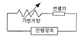
- 1.25
- 1.5
- 1.88
- 2.0
(정답률: 13%)
63. 그림과 같은 회로의 전달함수
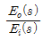
는?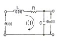
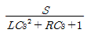
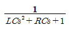
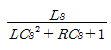
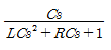
(정답률: 21%)
64. 임피던스
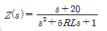
으로 주어지는 2단자회로에 직류 전류원 10[A]를 가할 때 이 회로의 단자전압 [V]은?- 20
- 40
- 200
- 400
(정답률: 14%)
65. 전류원의 내부저항에 관하여 맞는 것은?
- 전류공급을 받는 회로의 구동점 임피던스와 같아야 한다.
- 클수록 이상적이다.
- 경우에 따라 다르다.
- 작을수록 이상적이다.
(정답률: 16%)
66. 그림과 같은 파형이 라플라스 변환은?
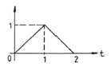
- 1-2e-s+e-2s
- s(1-2e-s+e-2s)
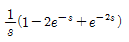
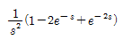
(정답률: 17%)
67. 대칭 5상 교류 성형결선에서 선간전압과 상전압 간의 위상차는 몇 도 인가?
- 27°
- 36°
- 54°
- 72°
(정답률: 22%)
68. 평형 3상 회로에서 그림과 같이 변류기를 접속하고 전류계를 연결하였을 때, A2에 흐르는 전류는 약 몇 [A]인가?
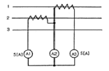
- 0
- 5
- 8.66
- 10
(정답률: 18%)
69. 어떤 콘덴서를 300[V]로 충전하는데 9[J]의 에너지가 필요하였다. 이 콘덴서의 정전용량은 몇 [㎌]인가?
- 100
- 200
- 300
- 400
(정답률: 18%)
70. 분포 정수회로에서 선로정수가 R, L, C, G이고 무왜형 조건이 RC=GL과 같은 관계가 성립될 때 선로의 특성 임피던스 Z0는? (단, 선로의 단위 길이당 저항을 R, 인덕턴스를 L, 정전용량을 C, 누설컨덕턴스를 G라 한다.)
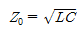
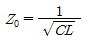
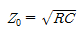
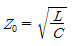
(정답률: 20%)
71. 그림과 같은 보드 위상선도를 갖는 회로망은 어떤 보상기로 사용될 수 있는가?
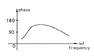
- 진상 보상기
- 지상 보상기
- 지상 진상 보상기
- 지상 지상 보상기
(정답률: 18%)
72. 기준 입력과 주궤환량과의 차로서, 제어계의 동작을 일으키는 원인이 되는 신호는?
- 조작 신호
- 동작 신호
- 주궤환 신호
- 기준 입력 신호
(정답률: 19%)
73. 제어계 전달함수의 극값(pole)이 그림과 같을 때 이 계의 고유 각주파수 wn는?
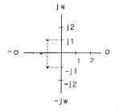
- 1/√2
- 1/2
- √2
- √3
(정답률: 13%)
74. w가 0에서 ∞까지 변화하였을 때 G(jw)의 크기와 위상각을 극좌표에 그린 것으로 이 궤적을 표시하는 선도는?
- 근궤적도
- 나이퀴스트선도
- 니콜스선도
- 보드선도
(정답률: 15%)
75.
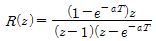
의 역변환은?- 1-e-akT
- 1+e-akT
- te-aT
- teaT
(정답률: 16%)
76. 다음의 신호 흐름 선도에서 C/R는?
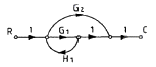
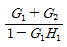
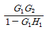
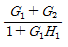
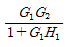
(정답률: 18%)
77. 특성방정식 S2+KS+2K-1=0인 계가 안정될 K의 범위는?
- K > 0
- K > 1/2
- K < 1/2
- 0 < K < 1/2
(정답률: 17%)
78.
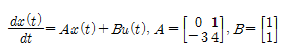
상태 방정식에 대한 특성방정식을 구하면?- s2-4s-3=0
- s2-4s+3=0
- s2+4s+3=0
- s2+4s-3=0
(정답률: 16%)
79. 근궤적
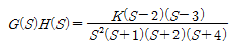
에서 점근선의 교차점은?- -6
- -4
- 6
- 4
(정답률: 18%)
80. 논리식
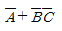
와 같은 논리식은?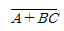
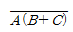
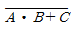
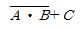
(정답률: 18%)
5과목: 전기설비기술기준 및 판단기준
81. 엘리베이터 등의 승강로 내에 시설되는 저압 옥내배선에 사용되는 전압의 최대한도는?
- 250V미만
- 300V미만
- 400V미만
- 600V미만
(정답률: 18%)
82. 특고압 가공전선로의 전로와 저압 전로를 변압기에 의하여 결합하는 경우의 제2종 접지공사에 사용하는 연동접지선 굵기는 최소 몇 mm2 이상인가?
- 0.75
- 2.5
- 6
- 8
(정답률: 17%)
83. 합성수지관 공사에 의한 저압 옥내배선 시설방법에 대한 설명 중 틀린 것은?
- 관의 지지점 간의 거리는 1.2m 이하로 할 것
- 박스 기타의 부속품을 습기가 많은 장소에 시설하는 경우에는 방습 장치로 할 것
- 사용 전선은 절연전선일 것
- 합성수지관 안에는 전선의 접속점이 없도록 할 것
(정답률: 18%)
84. 과전류 차단기로서 저압 전로에 사용하는 400[A] 퓨즈를 수평으로 붙여서 시험할 때 정격전류의 1.6배 및 2배의 전류를 통하는 경우 각각 몇 분 안에 용단되어야 하는가?
- 60분, 4분
- 120분, 6분
- 120분, 8분
- 180분, 10분
(정답률: 16%)
85. 2차측 개방전압이 7kV 이하인 절연변압기를 사용하고 절연 변압기의 1차측 전로를 자동적으로 차단하는 보호장치를 시설한 경우의 전격살충기는 전격격자가 지표상 또는 마루 위 몇 m 이상의 높이에 설치하여야 하는가?
- 1.5
- 1.8
- 2.5
- 3.5
(정답률: 14%)
86. 제3종 접지 공사 및 특별 제3종 접지 공사의 접지선에 다심 코드 또는 다심 캡타이어 케이블의 일심을 사용하는 경우의 접지선의 최소 굵기는 몇 [mm2]인가?(관련 규정 개정전 문제로 여기서는 기존 정답인 1번을 누르면 정답 처리됩니다. 자세한 내용은 해설을 참고하세요.)
- 0.75
- 1.25
- 6
- 8
(정답률: 21%)
87. 특고압 가공전선로의 지지물 중 전선로의 지지물 양쪽의 경간의 차가 큰 곳에 사용하는 철탑은?
- 내장형 철탑
- 인류형 철탑
- 보강형 철탑
- 각도형 철탑
(정답률: 22%)
88. 전기울타리의 시설에 관한 내용 중 틀린 것은?
- 수목과의 이격 거리는 30㎝ 이상일 것
- 전선은 지름이 2mm 이상의 경동선일 것
- 전선과 이를 지지하는 기둥 사이의 이격거리는 2㎝ 이상일 것
- 전기울타리용 전원장치에 전기를 공급하는 전로의 사용전압은 250V 이하일 것
(정답률: 10%)
89. 가공전선로의 지지물에 시설하는 지선의 시설 기준에 대한 설명 중 알맞은 것은?
- 지선의 안전율은 3.0 이상이어야 한다.
- 연선을 사용할 경우에는 소선(素線) 3가닥 이상이어야 한다.
- 지중의 부분 및 지표상 20㎝ 까지의 부분에는 내식성이 있는 것 또는 아연도금을 한다.
- 도로를 횡단하여 시설하는 지선의 높이는 지표상 4m 이상으로 하여야 한다.
(정답률: 23%)
90. 저압 전로에서 그 전로에 지락이 생겼을 경우 0.5초 이내에 자동적으로 전로를 차단하는 자동 차단기의 정격감도 전류를 100mA로 하여 설치하고자 하는데, 이 때 제3종 접지송사의 저항값은 몇 Ω 이하로 하여야 하는가? (단, 전기적 위험도가 높은 장소이다.)
- 150
- 200
- 300
- 500
(정답률: 17%)
91. 사용전압 22.9kV 특고압 가공전선과 저고압 가공전선 등 또는 이들의 지지물이나 지주 사이의 이격거리는 최소 몇 m 이상이어야 하는가? (단, 특고압 가공전선이 저고압 가공전선과 제1차 접근 상태일 경우이다.)
- 1.5
- 2
- 2.5
- 3
(정답률: 14%)
92. 전력보안 가공 통신선을 횡단보도교의 위에 시설하는 경우에는 그 노면상 몇 m 이상의 높이에 시설하여야 하는가?
- 3
- 3.5
- 4
- 4.5
(정답률: 10%)
93. 저압 옥측전선로의 시설로 잘못된 것은?
- 철골주 조영물에 버스덕트공사로 시설
- 합성수지관공사로 시설
- 목조 조영물에 금속관공사로 시설
- 전개된 장소에 애자사용공사로 시설
(정답률: 20%)
94. 전기욕기의 시설에서 진기욕기용 전원장치로부터 욕탕안의 전극까지의 전선 상호간 및 전선과 대지사이의 절연저항 값은 몇 MΩ 이상이어야 하는가?
- 0.1
- 0.2
- 0.3
- 0.4
(정답률: 18%)
95. 사용전압 66kV 가공전선과 6kV 가공 전선을 동일 지지물에 시설하는 경우, 특고압 가공전손은 케이블인 경우를 제외하고는 단면적이 몇 mm2인 경동연선 또는 이외동등이상의 세기 및 굵기의 연선이어야 하는가?
- 22
- 38
- 55
- 100
(정답률: 19%)
96. 특고압 가공전선로의 전선으로 케이블을 사용하는 경우의 시설로 옳지 않은 것은?
- 케이블은 조가용선에 행거에 의하여 시설한다.
- 케이블은 조가용선에 접촉시키고 비닐테이프 등을 30㎝ 이상의 간격으로 감아 붙인다.
- 조가용선은 단면적 22mm2 이상의 아연도강연선 또는 동등이상의 세기 및 굵기의 연선을 사용한다.
- 조가용선 및 케이블의 피복에 사용한 금속체에는 제3종 접지공사를 한다.
(정답률: 17%)
97. 직류식 전기철도에서 배류선은 상승부분 중 지표상 몇 m 미만의 부분에 대하여는 절연전선 · 캡타이어 케이블 또는 케이블을 사용하고, 사람이 접촉할 우려가 없고 또한 손상을 받을 우려가 없도록 시설하여야 하는가?
- 2.0
- 2.5
- 3.0
- 3.5
(정답률: 13%)
98. 인가가 많이 연접되어 있는 장소에 시설하는 가공전선로의 구성재 중 고압 가공전선로의 지지물 또는 가섭선에 적용하는 풍압하중에 대한 설명으로 옳은 것은?
- 갑종 풍압하중의 1.5배를 적용시켜야 한다.
- 을종 풍압하중의 2배를 적용시켜야 한다.
- 병종 풍압하중을 적용시킬 수 있다.
- 갑종 풍압하중과 을종 풍압하중 중 큰 것만 적용시킨다.
(정답률: 17%)
99. 뱅크용량이 10000kVA 이상인특고압 변압기의 내부 고장이 발생하면 어떤 보호장치를 설치하여야 하는가?
- 자동차단장치
- 경보장치
- 표시장치
- 경보 및 자동차단장치
(정답률: 15%)
100. 태양전지 발전소에 시설하는 태양전지 모듈 시설에 대한 설명 중 틀린 것은?
- 충전부분은 노출되지 아니하도록 시설할 것
- 태양전지 모듈에 접속하는 부하측 전로에는 그 접속점에 멀리하여 개폐기를 시설할 것
- 전선은 공칭단면적 2.5mm2 이상의 연동선 또는 동등 이상의 세기 및 굵기일 것
- 태양전지 모듈을 병렬로 접속하는 전로에는 전로를 보호하는 과전류차단기 등을 시설할 것
(정답률: 18%)